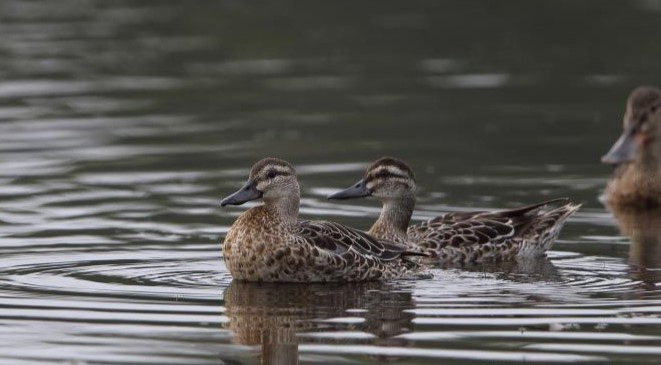
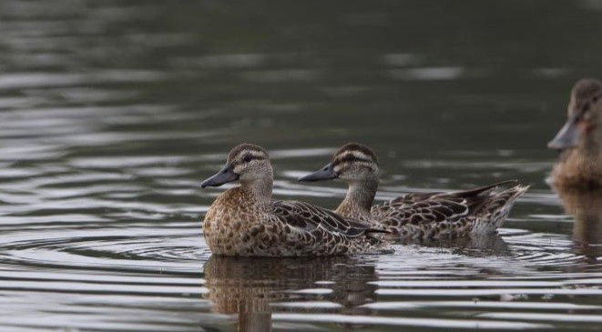
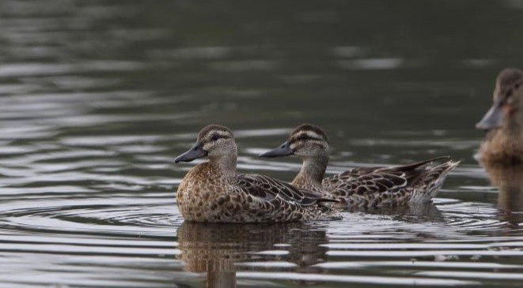

The island of Sri Lanka is home to a diverse array of wildlife, including elephants, leopards, marine life, and a wide variety of birds. It is also one of the best places in the world to witness whales, notably the majestic blue whale.
The easiest method to see animals in their natural habitat is to visit safari parks and sanctuaries, especially in the southern and central regions of the country, where 12% of the land is set aside for wildlife conservation.
Keep an eye out for sightings of the endangered leopard; observe the elephants at their feeding and washing stations in tanks or lagoons; or take a leisurely stroll along the west and south coast beaches close to the marine turtles as they lay their eggs.

The island nation of Sri Lanka, which is tucked away in the Indian Ocean, is a secret haven for avian enthusiasts.
An astounding variety of bird species find home in Sri Lanka, which has a broad range of environments from lush rainforests to barren plains.
It is a birdwatcher's heaven due to its tropical temperature, immaculate scenery, and friendly residents.
A Refuge for Bird Diversity.
The surprising variety of birds seen in Sri Lanka is hidden by its small size. For both experienced and inexperienced birdwatchers,
there are over 440 documented bird species. The island provides a unique opportunity to study resident and seasonal species,
since it acts as a crossroads for migratory birds.
There are numerous Important Bird Areas and bird sanctuaries in the area where a remarkable variety of avifauna can be observed.
The Kumana and Bundala
National Parks are excellent places to go bird watching, offering views of nearly all Sri Lankan bird species.
Another popular destination in Sri Lanka is the Sinharaja Bird Wave, which offers tourists the island's longest and
greatest documented bird waves.
Sri Lanka is a birdwatcher's dream come true, with five RAMSAR locations.
The southern region of Bundala is primarily
made up of brackish water lagoons and is well-known for its vast migratory flamingo flocks.Kumana National Park, which is
located in the same region, provides a nice mix of woodland and marsh areas and was one of the first bird sanctuaries
in the nation. Here's your chance to see the bashful Southern Sirkeer, hopefully.
In a similar vein, the Anawilundawa Wetlands
in the northwest are made up of a network of tanks that serve as a haven for a variety of duck and wader species.
The Sinharaja Rainforest is home to twenty of Sri Lanka's twenty-six rare bird species. Among these are the stunning Blue Magpie,
Green-billed Coucal, and Red-faced Malkoha.
On the island, 102 terrestrial animals have been found thus far. Of these, 90 are native species, 14 of which are unique to Sri Lanka.
Because of the island's varied temperature, vegetation, attitude, and geographic past, mammals are widely dispersed throughout the nation.
Elephants are the most iconic animal on the island, and many visitors come to Sri Lanka just to view them. To observe elephants in
their natural habitat in one of the national parks, or to learn more about the significance of elephants to Sri Lankan culture,
stop by the Millenium Elephant Foundation.
Many national parks in Sri Lanka offer opportunities to witness the elusive leopard,
but Yala National Park boasts the largest density of leopards worldwide. Visit the serene Wilpattu to observe sloth bears,
or visit the Polonnaruwa monkeys to witness toque macaque, grey langur, and purple-faced leaf monkeys.
Continue reading to find out what some of top national parks Sri Lanka has to offer
The island is also thought to be the greatest location on Earth to see blue whales, the biggest animals to have ever lived.
The finest places to see these incredible creatures are around the coasts of Trincomalee and Mirissa, although Kalpitiya is
regarded as one of the top 10 places in the world to see the incredible sperm whale, which is the largest toothed whale in the world.
In the meantime, Mirissa provides tourists with the best opportunity to observe both of these spectacular marine mammals on the same tour.
Along with a variety of vibrant tropical fish and intricate, captivating corals, Sri Lanka's oceans are home to a broad variety of amazing
creatures, such as whales and dolphins, dugongs, sting rays, eels, whale sharks, and five kinds of endangered marine turtles.
Take a whale and dolphin watching excursion to hunt for the majestic blue whale, or observe a turtle laying its eggs in the beach before
it heads back out to sea. How about taking a wildlife vacation in Sri Lanka?
There are wildlife activities all year round on the
island because of its remarkably diverse topography and the amazing array of species that have made this their home.
Dolphin and whale viewing is popular in the nearby ocean, thus Sri Lanka's wildlife is not just found on land.
Whale watching is especially popular in the waters off the southern coastal town of Mirissa, where sightings are common not too far out to sea.
Additionally, visit the Kalpitiya peninsula, which is well-known for its enormous pods of bottle-nosed dolphins, to go dolphin watching.
It is the island's East most coast. Wreck diving is well-known in this region. May through October is when diving at Batticaloa is most enjoyable.
The waters here are unique in that they have excellent visibility. There is a wide variety of diving locations with varying degrees of difficulty and depth, making it an excellent option for both novice and expert divers.
Giant morays, Trevally, Tuna, and lesser species such as Sweetlips,Emperor and Bannerfish.
Nearby rocks are home to a plethora of lobsters, crabs, and shrimp. There are diving facilities, such as Batticaloa. Diving Center, where you can obtain PADI-certified diving instruction.

The diving experience at Kalpitiya is situated 165 kilometers north of Colombo in the Puttalam district of the
northwest province of Sri Lanka.
It is among Sri Lanka's top diving locations. April through November is Kalpitiya's visitor season.
The main reason for Kalpitiya's fame is its abundance of whales and dolphins.
Most notably, only the waters around Kalpitiya are home
to Spinner dolphins. They gather in superpods close to the coast.
Furthermore, the largest coral reef in the Indian Ocean is located within an hour's boat ride from the shore of Kalpitiya and is
accessible via the Bar Reef Sanctuary.
With a surface area of over 307 square kilometers, this bar reef is the richest in
biodiversity in the Indian Ocean. More than 156 coral and 283 fish species.

Colombo diving experience: The wrecks are the primary draw of Colombo. Shipwrecks litter the coastline in a dozen different places.
In addition, there are some average reefs, both hard and soft corals, and of course, marine life.
Diving in Colombo sites is available from
November through April. That comes after the end of the monsoon. The months of November and December may see some light rain.
February and March are the ideal months because of the ideal heat and dry weather.
This location has both older and more modern shipwrecks.
Black coral trees and a variety of colorful, hard, and soft corals cover the majority of these shipwrecks. Numerous fish species, such as
Barracuda, Fusiliers, Glassfish, Bigmouth Mackerel, and Blueline Snappers, are drawn to these.
Trincomalee diving site: Trincomalee is located in Sri Lanka's Eastern Province. It is home to Asia's largest naturally occurring harbor.
The east coast is home to Trincomalee. It is well-known for its long, sandy beaches, ideal warm weather, and crystal-clear,
blue Turkish waters. Snorkelers and divers will also find this to be perfect.
Divers from all over the world travel to Trincomalee.
Numerous aquatic animals, including fish, turtles, nudibranchs, and well-known coral reefs, can be found in this area.
This area is open for diving from March through September.One dive location that comes to mind is Swami Rock.
Situated
directly beneath the renowned Koneswaram temple. You can observe parrotfish, sweetlips, blue striped snapper, rays,
and other marine species in these diving regions.
Scuba Diving in Negombo: Negombo is Sri Lanka's west coast. It's among the island's most visually appealing beaches.
The distance between Negombo and Colombo is about 35 kilometers. Negombo offers diving spots for enthusiasts of colorful
marine life, rocks, wrecks, and coral reefs.
The months of October through March are the greatest for diving in the Negombo Seas.
In Negombo, among the numerous dive sites, there are a few wrecks. Among these are the wrecks of We Ling, Chief Dragon, Taprobane,
and Challinor, as well as the aircraft wreck.
Another dive location is the barracuda Reef Ula Gala, where you can observe
huge groupers, Oriental Sweetlips, Trevally, Yellow Jack, and many other marine animals. Among the locations with the best
marine life is Derana Gala, often known as the country Reef.

Scuba diving at Hikkaduwa and Unawatuna: Both locations are close to Sri Lanka's south coast. That is located in the Southern
Province's Galle district.
The regions where scuba diving is most popular are Unawatuna and Hikkaduwa, which are located roughly
98 kilometers south of Colombo. They are particularly well-known for their magnificent coral reefs. In addition, there are several
shipwrecks. Thus, this location is appropriate for both novice scuba divers and experienced snorkelers.
October through April is
the ideal diving season on the south coast. The most remarkable feature of Hikkaduwa is its coral gardens. Many different kinds
of marine life call it home.
Passikuda diving site: Passikuda located on Sri Lanka's eastern coast.
That is, specifically, in the Eastern Province's Batticaloa
district. Because the majority of the dive sites at Passikuda are shallow, they are perfect for novice divers.
There are reefs and
wrecks in the sea that are somewhat deeper and await adventure seekers for more seasoned divers. It is particularly well-known for
the various kinds of marine life and its flawless, beautiful coral gardens.
Yellow Striped Goatfish, Blue Lined Snappers, Bigeye
Snappers, Clownfish, Sweetlips, Trevally, Napoleon Wrasses, and Stingrays are the fish that are most frequently spotted.